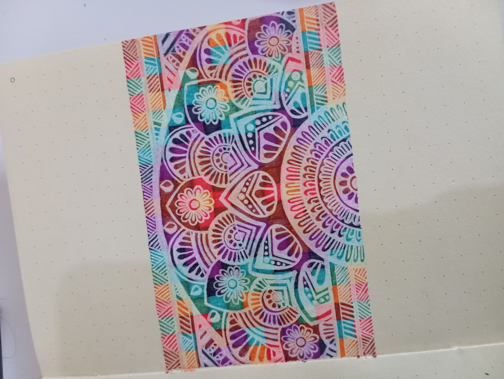

Karya Ilustrasi Saya

Mandala Floral

Mandala Floral
Ilustrator | Pengelola Konten TikTok | Tertarik pada Business Analytics & IT
Saya seorang ilustrator yang gemar menciptakan ilustrasi menarik dan ekspresif. Selain berkarya, saya juga aktif mengelola akun TikTok pribadi sebagai ilustrator, di mana saya tidak hanya berbagi proses kreatif tetapi juga **menganalisis data performa konten untuk memahami audiens dan mengoptimalkan strategi.**
Minat saya pada analisis data dan sistem informasi tumbuh dari pengalaman tersebut. Saya percaya bahwa data dapat menjadi alat yang ampuh untuk meningkatkan kualitas desain dan pengalaman pengguna. Saya antusias untuk mendalami bidang Business Analytics dan berkontribusi pada solusi IT yang inovatif.
Sebagai ilustrator di TikTok, saya secara rutin memantau metrik seperti jumlah Views, Likes, Comments, Shares, dan Engagement Rate.
Ini menunjukkan bagaimana saya menggunakan data untuk membuat keputusan strategis dalam menciptakan konten yang disukai audiens.
Lihat Akun TikTok Saya
Mandala Floral
Mandala Floral
Email: ulliaarif12@gmail.com